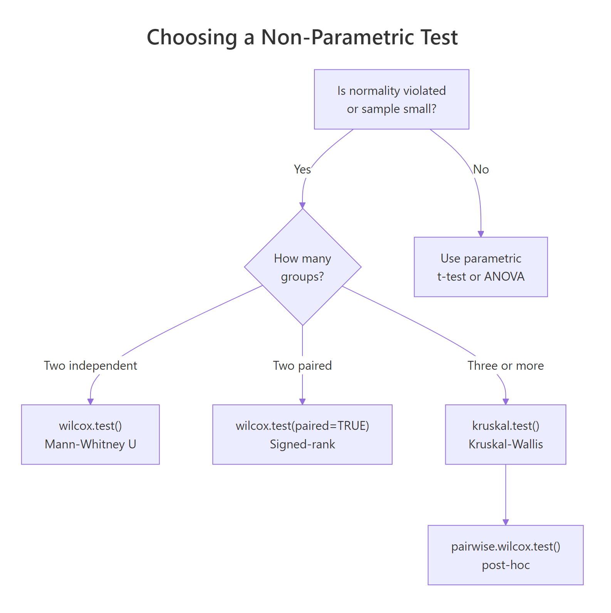
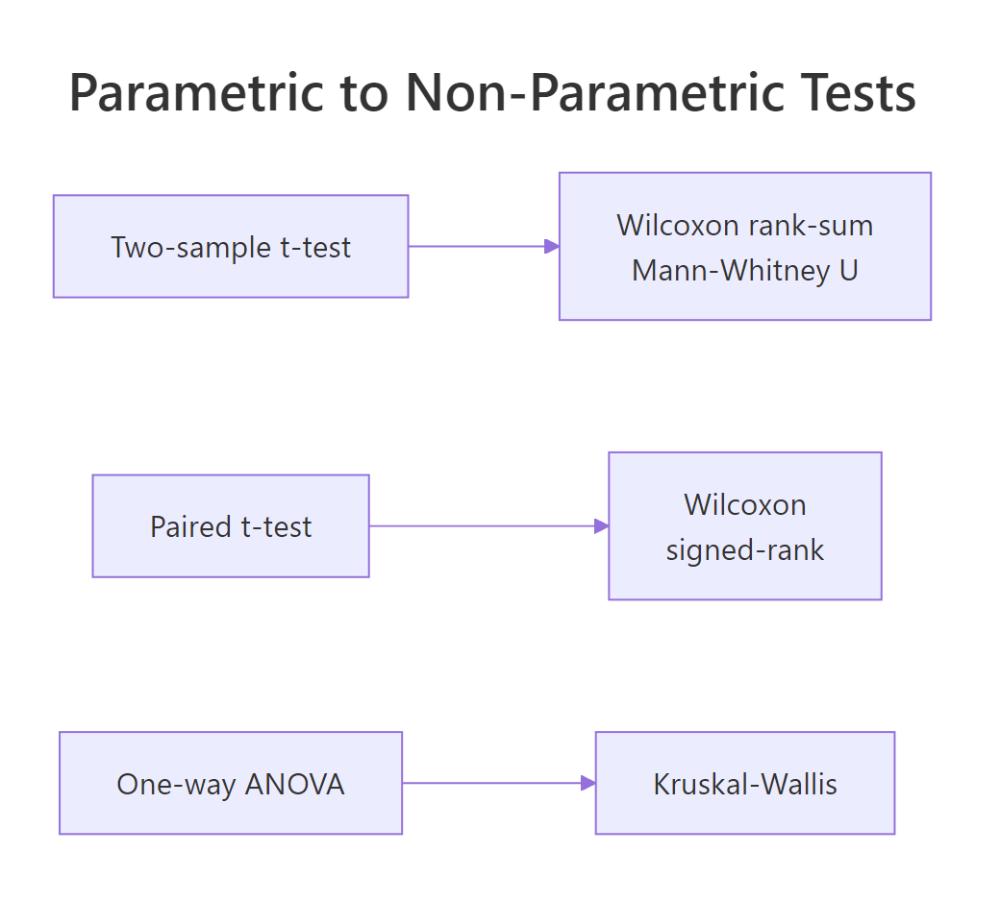

Wilcoxon, Mann-Whitney, and Kruskal-Wallis in R: Non-Parametric When Normality Fails
When your data is skewed, ordinal, or the sample is too small to trust a t-test, rank-based tests like Wilcoxon, Mann-Whitney U, and Kruskal-Wallis give valid p-values without assuming normality. In R, you run them with wilcox.test() and kruskal.test().
When should you use non-parametric tests instead of t-tests and ANOVA?
Parametric tests like the t-test and ANOVA assume your data are roughly normal. When that assumption breaks, p-values become unreliable, sometimes wildly so. Rank-based tests sidestep normality by comparing ranks instead of raw values. Here is a quick demonstration on two skewed salary samples where a t-test would be misleading but wilcox.test() still gives a defensible answer.
The W statistic is the sum of ranks for the first sample after pooling both groups and ranking them together. The p-value of 0.039 says the two groups come from different distributions at the 5% level, and we reached that conclusion without any normality gymnastics.

Figure 1: Decision tree for choosing between Wilcoxon rank-sum, signed-rank, and Kruskal-Wallis tests.
Every common parametric test has a rank-based twin. When the parametric assumptions hold, prefer the parametric version because it has more power. When they fail, swap in the non-parametric equivalent.

Figure 2: Every common parametric test has a rank-based non-parametric equivalent.
Try it: Two pre-filled vectors ex_a and ex_b hold reaction times from two groups. Run a two-sided Wilcoxon rank-sum test and read the p-value.
Click to reveal solution
Explanation: wilcox.test() with two numeric vectors runs the rank-sum test by default. The small p-value says group B's reaction times are stochastically larger.
How does wilcox.test() compare two independent groups?
The Wilcoxon rank-sum test, also called the Mann-Whitney U test, answers: "Are these two samples drawn from the same distribution?" The algorithm pools the two groups, ranks all values from smallest to largest, and sums the ranks for the first group. If the two samples are interchangeable, that rank sum should land near its expected value; if one group systematically ranks higher, the sum will be unusually high or low.
Let's compare sepal length between iris species Setosa and Versicolor. Setosa has visibly smaller sepals, so we expect a very small p-value.
The p-value is microscopically small, which matches what the boxplots show. Note the droplevels() call. Without it, R would still track virginica as an unused factor level and warn you. The warning about ties you may see just means base R switched from an exact p-value to a normal approximation, which barely changes anything for 100 observations.
You can also run a one-sided test when you have a directional hypothesis. Since we suspect Setosa sepals are shorter, set alternative = "less".
The one-sided p-value is exactly half the two-sided value. Only use a one-sided test when your hypothesis is truly directional before you look at the data.
Try it: Run a two-sided rank-sum test comparing Petal.Length between the versicolor and virginica iris species.
Click to reveal solution
Explanation: The p-value is essentially zero, so virginica petals are stochastically longer than versicolor.
How do you test paired samples with the Wilcoxon signed-rank test?
When each observation in one group is naturally linked to one in the other, for example before-and-after measurements on the same patients, you have paired data. Running a rank-sum test would throw away the pairing information. The Wilcoxon signed-rank test uses it.
The signed-rank procedure computes the differences within each pair, ranks the absolute differences, then sums the ranks that correspond to positive differences. A V statistic far from its expected value signals a systematic direction in the differences.
R's classic sleep dataset measures extra sleep hours for 10 patients under two soporific drugs. Each patient takes both drugs, so the data are paired.
The V statistic of 3 is far below its expected value of 27.5 under the null, and the p-value is 0.009. Drug 2 gives more extra sleep than drug 1, and we reach that conclusion without assuming the differences are normal.
Try it: Simulate 12 patients' cholesterol before and after a 6-week diet. Run a paired signed-rank test to see whether the diet changed cholesterol.
Click to reveal solution
Explanation: Most of the post-diet values are lower than pre, so the positive-difference rank-sum V is large, and the p-value rejects "no change".
How does kruskal.test() compare three or more groups?
When you have three or more independent groups, Wilcoxon rank-sum no longer applies. The Kruskal-Wallis test extends it: pool all values, rank them, compute the mean rank per group, and check whether mean ranks differ more than random shuffling would allow.
The test statistic H follows (approximately) a chi-squared distribution with k - 1 degrees of freedom, where k is the number of groups.
$$H = \frac{12}{N(N+1)} \sum_{i=1}^{k} \frac{R_i^2}{n_i} - 3(N+1)$$
Where:
- $N$ = total sample size across all groups
- $k$ = number of groups
- $R_i$ = sum of ranks in group $i$
- $n_i$ = sample size in group $i$
Let's try the built-in PlantGrowth dataset, which records dried plant weights under a control and two treatment conditions.
The p-value of 0.018 rejects the null that all three distributions are identical. What it does not tell you is which pair differs. That comes next.
kruskal.test() also accepts a list of vectors instead of a formula, which is handy when your groups are stored separately.
Identical result. Use whichever interface matches how your data is stored.
wilcox.test() (up to tie corrections). That equivalence is why the post-hoc procedure uses rank-sum tests on each pair.Try it: Run Kruskal-Wallis on Sepal.Width by Species across all three iris species.
Click to reveal solution
Explanation: The three species have very different Sepal.Width distributions, giving an H of 63.6 and a p-value close to zero.
How do you run post-hoc comparisons after a significant Kruskal-Wallis test?
A significant Kruskal-Wallis result says "at least one pair differs" but not which one. To pin down the guilty pair, run pairwise Wilcoxon rank-sum tests and adjust the p-values for multiple testing.
Base R ships pairwise.wilcox.test() which does exactly that. With three groups you get three pairwise tests, so a Bonferroni correction multiplies each raw p-value by 3.
Only the trt1-vs-trt2 pair survives the Bonferroni correction at α = 0.05. Bonferroni is conservative, so when you have many groups it can kill real effects. Benjamini-Hochberg controls the false discovery rate instead and keeps more power.
The conclusion is the same here, but BH would flag more pairs if your experiment had more groups and borderline p-values.
pairwise.wilcox.test() re-ranks within each pair, which is slightly inconsistent with the omnibus ranking. Dunn's test uses the ranks from the original Kruskal-Wallis call. Install FSA and run FSA::dunnTest(weight ~ group, data = PlantGrowth, method = "bh") in a local R session. The FSA package is not bundled with the interactive runtime on this page.Try it: Simulate three groups with clearly different means and run pairwise Wilcoxon with FDR adjustment.
Click to reveal solution
Explanation: All three pairs differ after BH adjustment. C is clearly separated from both A and B.
What pitfalls and effect sizes should you know?
Three issues catch people off guard with rank-based tests. First, ties. When two observations are equal, R cannot compute an exact p-value and falls back on a normal approximation, printing a warning.
The warning is informational. The reported p-value is still valid, just based on a normal approximation instead of the exact distribution. You only need to worry when samples are small and ties are abundant, in which case the coin::wilcox_test() function offers exact ties-aware p-values.
Second, a significant p-value tells you "something differs" but not "how big the effect is". Report an effect size alongside every p-value. For a two-group rank-sum test, the rank-biserial correlation is a clean choice. It ranges from 0 (no effect) to 1 (complete separation).
An |r| of 0.75 is a large effect by Cohen's benchmarks (0.10 small, 0.30 medium, 0.50 large). That matches what we saw: the two species barely overlap in sepal length.
Third, for Kruskal-Wallis, the epsilon-squared statistic gives a similar "proportion of variance explained" feel. Compute it from the H statistic and total N.
An eps² of 0.275 is a relatively strong effect by Cohen-equivalent thresholds (small 0.01, medium 0.08, large 0.26). Combined with the pairwise test, we now have a complete picture: there is a real difference, trt1 and trt2 are the culprits, and the effect is not small.
Try it: Given H = 12.4 from a Kruskal-Wallis test on N = 45 observations, compute epsilon-squared and classify it as small, medium, or large.
Click to reveal solution
Explanation: Epsilon-squared of 0.28 exceeds the 0.26 large-effect threshold, so the Kruskal-Wallis detects a substantial difference.
Practice Exercises
Apply everything you just learned. Each exercise combines at least two concepts from the tutorial. Work through them before peeking at the solution.
Exercise 1: Decide the right test from the data
You have two reaction-time samples my_x and my_y. Use shapiro.test() to decide whether normality holds, then run either a t-test or a Wilcoxon rank-sum test based on the result. Print the chosen test's output.
Click to reveal solution
Explanation: shapiro.test() rejects normality for both samples (exponential draws are far from normal). We branch into wilcox.test(), which finds no significant difference at α = 0.05.
Exercise 2: Kruskal-Wallis plus post-hoc on real data
Using the built-in airquality dataset, test whether mean Ozone differs across months. Drop rows with missing Ozone first. Convert Month to a factor. Run Kruskal-Wallis; if significant, follow up with pairwise.wilcox.test() using BH adjustment.
Click to reveal solution
Explanation: Kruskal-Wallis strongly rejects equality (p ≈ 7e-06). Post-hoc shows Jul and Aug differ from May, Jun, and Sep, but not from each other. Summer Ozone is higher, which matches atmospheric chemistry.
Exercise 3: Report the effect size
Using the same aq object from Exercise 2, compute epsilon-squared from the Kruskal-Wallis H statistic and classify it as small, medium, or large using the thresholds 0.01 / 0.08 / 0.26.
Click to reveal solution
Explanation: Epsilon-squared of 0.26 just crosses the large-effect threshold. Ozone varies substantially across months in this dataset.
Complete Example
Here is a full non-parametric pipeline on airquality: clean the data, visualise, check normality, pick the right test, run it, follow up with post-hoc, and report an effect size. All in one flow.
This is the minimum a reader or reviewer should see: visualisation, assumption check, the right test, pairwise follow-up, and an effect size with interpretation thresholds.
Summary
| Parametric test | Non-parametric equivalent | R function | When to use |
|---|---|---|---|
| Two-sample t-test | Wilcoxon rank-sum / Mann-Whitney U | wilcox.test(x, y) |
2 independent groups, non-normal data |
| Paired t-test | Wilcoxon signed-rank | wilcox.test(x, y, paired = TRUE) |
2 matched samples, non-normal differences |
| One-way ANOVA | Kruskal-Wallis | kruskal.test(y ~ group) |
3+ independent groups, non-normal data |
| Tukey HSD / pairwise t | Pairwise rank-sum or Dunn's test | pairwise.wilcox.test() / FSA::dunnTest() |
Post-hoc after significant Kruskal-Wallis |
Key workflow:
- Plot the data and eyeball distribution shape.
- Test normality per group with
shapiro.test(). - If normality fails, pick the rank-based test that matches your design.
- Report the test statistic, p-value, and an effect size (rank-biserial r or epsilon-squared).
- For three-plus groups, follow a significant omnibus with corrected pairwise comparisons.
References
- R Core Team. wilcox.test: Wilcoxon Rank Sum and Signed Rank Tests. Link
- R Core Team. kruskal.test: Kruskal-Wallis Rank Sum Test. Link
- R Core Team. pairwise.wilcox.test: Pairwise Wilcoxon Rank Sum Tests. Link
- Hollander, M., Wolfe, D. A., and Chicken, E. (2013). Nonparametric Statistical Methods, 3rd edition. Wiley.
- Wilcoxon, F. (1945). Individual comparisons by ranking methods. Biometrics Bulletin, 1(6), 80-83.
- Mann, H. B., and Whitney, D. R. (1947). On a test of whether one of two random variables is stochastically larger than the other. Annals of Mathematical Statistics, 18(1), 50-60.
- Kruskal, W. H., and Wallis, W. A. (1952). Use of ranks in one-criterion variance analysis. Journal of the American Statistical Association, 47(260), 583-621.
- Ogle, D. H. FSA::dunnTest reference. Link
Continue Learning
- t-Tests in R: the parametric sibling of the rank-sum test; use when your data is roughly normal.
- Normality and Variance Tests in R: the Shapiro-Wilk and Levene checks you run before deciding between parametric and non-parametric.
- Effect Size in R: the wider family of effect sizes you should report alongside every p-value, not just rank-biserial r and epsilon-squared.